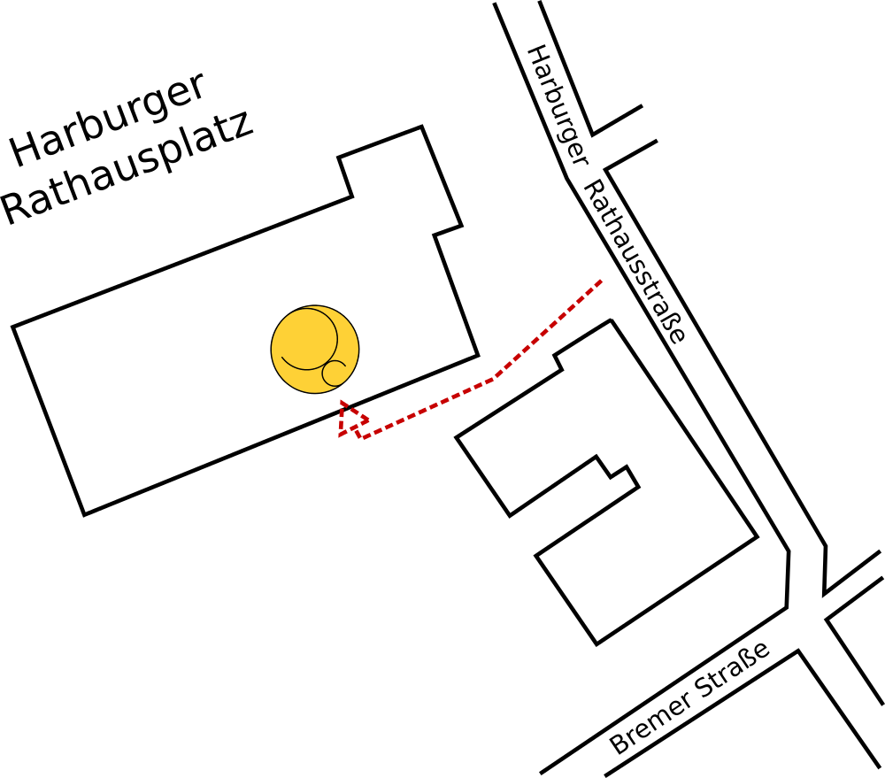

Die Praxis

Die Praxis ist mit in den Räumlichkeiten der Physiotherapie “Physioteam am Rathaus”. Dort erwartet Sie eine ruhige Amosphäre in großen und freundlich eingerichteten Räumlichkeiten. Sie befindet sich Zentrumnah direkt neben dem Rathaus in Harburg und ist daher sehr gut mit den öffentlichen Verkehrsmitteln, wie der S-Bahn oder dem Bus zu erreichen. Ein barrierefreier Zugang ist über die Tiefgarage des Hauses möglich. Bei Bedarf bitte vorher Bescheid geben.
Behandlungszeiten
Mo: 8 - 12:30 Uhr
Mi: 8 - 13 Uhr und 14 - 18 Uhr
Fr: 8 - 13 Uhr
Sa: 8 - 13 Uhr und 14 - 18 Uhr
- Termine nur nach vorheriger Absprache -
Sie erreichen mich unter: 0157 5881 2637.
Terminabsprachen gerne von Mo - Fr in den Zeiten
8 - 12 Uhr und 13 - 15 Uhr
auch unter der Nummer:
040 - 689 85 129
(Empfangskraft des Physioteams)
Anfahrt

Leider ist der Eingang zur Praxis etwas versteckt. Dadurch finden neue Patienten mich manchmal nicht sofort. Das liegt daran, dass das Gebäude Harburger Rathausstraße 40 zwei Eingänge hat. Ein Eingang liegt zum Rathausplatz hin. Diesen steuern Patienten häufig zuerst an. Meine Praxis befindet sich jedoch hinter dem anderen Eingang, welcher eher auf der Rückseite des Gebäudes liegt. Daher hier eine kleine Anfahrtsskizze. Ich hoffe, es erleichtert die Orientierung.